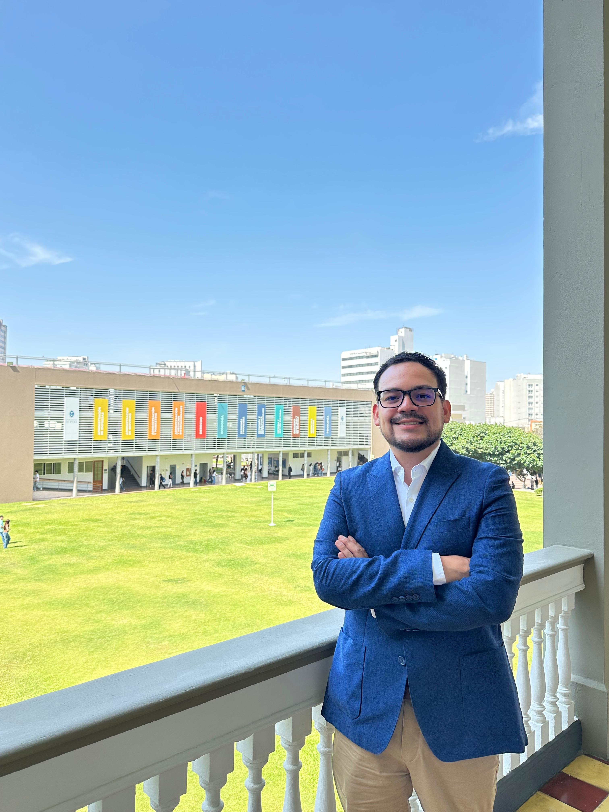

Common Ownership Around the World
Presented atBoston University · Michigan State University · PUC Chile · RCF–ECGI Conference · 2026 Global Corporate Governance Colloquium
Assistant Professor of Finance / Universidad de Piura

Guillermo Ramirez-Chiang is an Assistant Professor of Finance at Universidad de Piura. He holds a PhD in Financial Management and a Master of Research in Management, both from IESE Business School, University of Navarra. His earlier degrees include an MSc in Finance from the University of British Columbia, an MSc in Economics and Finance from the Barcelona School of Economics, and a B.A. in Economics from Universidad de Piura.
His academic work centers on corporate finance, corporate governance, and the interaction between firms' real and financial decisions. His research interests also include the relationship between politics and finance and its implications for corporate behavior and decision-making.
At Universidad de Piura he teaches Foundations of Corporate Finance and Firm Valuation.
Presented atBoston University · Michigan State University · PUC Chile · RCF–ECGI Conference · 2026 Global Corporate Governance Colloquium
Presented atIESE Business School · Universidad de Piura
Presented atIESE Business School